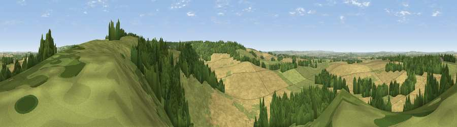

Viewpoint near Ewelme
#10931 in England · top 8% of its area beats it · near EwelmeWhere it is
The exact computed spot (SU 66975 91525). Click the marker for map links.
The view, rendered

A 360° render of this exact spot computed from the terrain model, tree cover and land cover — summer colours, afternoon light, calibrated against photographs of famous viewpoints. Real trees, hedges and buildings will differ in detail.
The panorama
Grey silhouette: terrain skyline in each direction (720 bearings, Earth curvature and refraction included). Dashed green: skyline with trees (+15 m) and buildings (+8 m) as obstacles. Blue strip: how far the ground is visible on each bearing.
Where the view opens
Wedge length = distance to the farthest visible ground on that bearing (vegetation-aware). Rings at 10, 25 and 50 km.
What fills the view
49% cropland · 31% grassland · 20% woodland
Angular shares of the visible panorama (visual magnitude), not map area. Landscape diversity 0.46 (0–1 Shannon).
Key numbers
More beautiful places nearby
The staircase of upgrades: each row has a higher view potential than everything closer. Driving times are estimates from straight-line distance, calibrated against real road routing — check an actual route before setting out.
| Place | Direction | Drive | Score |
|---|---|---|---|
| Viewpoint near Cookley Green | E · 1 km | ~2 min | 64.3 |
| Viewpoint near Cookley Green | E · 2 km | ~5 min | 68.5 |
| Viewpoint near Watlington | ENE · 4 km | ~9 min | 70.6 |
| Viewpoint near Lewknor | NE · 6 km | ~13 min | 70.8 |
| Viewpoint near Lewknor | NE · 8 km | ~16 min | 74.4 |
| Coombe Hill Monument | NE · 23 km | ~39 min | 75.5 |
| Viewpoint near Woolstone | W · 37 km | ~56 min | 76.7 |
| Martinsell viewpoint | WSW · 56 km | ~78 min | 76.9 |
51.61857, -1.03402 · source: screening · position refined by local search. Computed location — check access rights before visiting.